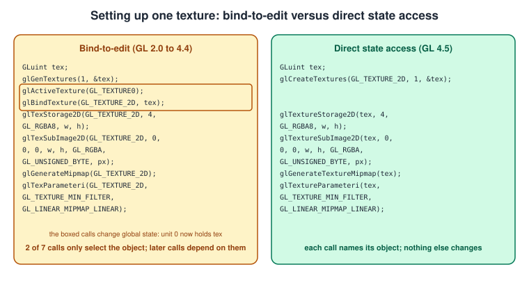
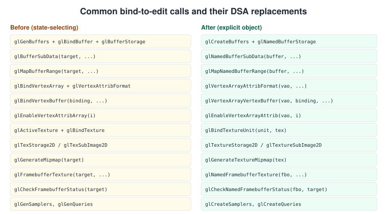
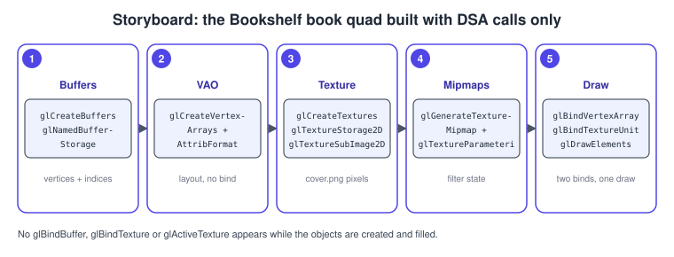

Direct State Access
|
This content was generated with the assistance of AI and should be verified against the official documentation before being relied on in production. |
For twenty years every OpenGL object was edited the same way: you bind it to a target and then call a function that changes "whatever is bound to this target". Direct State Access (DSA) turns that around: the edit function takes the object as an argument and touches nothing else. The change removes a whole class of bugs (code that silently depends on, or damages, a binding made somewhere else) and makes OpenGL code look like the explicit APIs it is now being ported to. This page explains the old model and its hazards, the new entry points, what you still bind, a mapping table for the commonly used calls, platform support, a fallback for contexts without DSA and a complete program.
The facts were checked in November 2026. DSA is core in OpenGL 4.5 (released in August 2014), where it comes from the
extension GL_ARB_direct_state_access; the version documented is OpenGL 4.6. It is not part of OpenGL ES 3.2 or WebGL, and
macOS stops at OpenGL 4.1 and therefore does not provide it. The Bookshelf GL baseline is OpenGL 4.1 core, so this page shows DSA as the
optional modern path and gives a fallback that runs everywhere. Where the rest of the sub-section uses DSA calls, it says so;
on a 4.5 desktop the whole sub-section can be written this way. The general comparison with the explicit APIs
(Vulkan, Metal, WebGPU), which have no global edit state at all, is in
Explicit vs Implicit APIs.
The problem: bind-to-edit
In the classic model each target (GL_ARRAY_BUFFER, GL_TEXTURE_2D, GL_FRAMEBUFFER and so on) has one binding slot, and
functions that modify an object do not name it; they act on whatever sits in the slot. Setting up one texture takes
this sequence:
glGenTextures(1, &tex);
glActiveTexture(GL_TEXTURE0); // select a unit...
glBindTexture(GL_TEXTURE_2D, tex); // ...and put the texture into its 2D slot
glTexStorage2D(GL_TEXTURE_2D, 4, GL_RGBA8, w, h);
glTexSubImage2D(GL_TEXTURE_2D, 0, 0, 0, w, h, GL_RGBA, GL_UNSIGNED_BYTE, pixels);
glGenerateMipmap(GL_TEXTURE_2D);
glTexParameteri(GL_TEXTURE_2D, GL_TEXTURE_MIN_FILTER, GL_LINEAR_MIPMAP_LINEAR);Every call after the bind is correct only because of an invisible fact: texture unit 0 now has this texture in it. That has three consequences.
-
Side effects. The code above replaces whatever the previous draw call had bound at unit 0. A function that only wanted to create a texture has changed the rendering state of its caller.
-
Hidden dependencies. Another function that set
glActiveTexture(GL_TEXTURE5)earlier makes the firstglBindTextureland on unit 5. The bug appears far from its cause. -
Libraries clash. UI toolkits, image loaders and engines that all draw with OpenGL must save and restore the bindings they disturb, or the next draw uses the wrong object. The sequence below shows how a harmless helper breaks rendering.
The two columns of the next figure contain the same texture setup in both styles; the boxed calls in the left column change global state.

What DSA changes
DSA adds a second, parallel set of entry points to OpenGL. Wherever a function used to act on the object bound to a target, the new function takes the object name instead of the target:
| Old (acts on the bound object) | New (acts on the named object) |
|---|---|
|
|
|
|
|
|
|
|
|
|
Two related changes make the rest work:
-
glCreate*instead ofglGen*.glGenTexturesonly reserves names; an object gets its type (2D, cube map, 3D) at the firstglBindTexture.glCreateTextures(target, n, names)makes a real object of the given type immediately, and DSA functions require that. Calling aglTexture*function on a name that came fromglGenTexturesand was never bound raisesGL_INVALID_OPERATION. The same holds forglCreateBuffers,glCreateVertexArrays,glCreateFramebuffers,glCreateRenderbuffers,glCreateSamplers,glCreateQueries(target, n, ids),glCreateProgramPipelinesandglCreateTransformFeedbacks. -
Binding for use is separate from binding for editing. You still bind objects to use them (
glBindVertexArray,glUseProgram,glBindFramebuffer,glBindBufferBase), but you never need to bind to modify them. A new functionglBindTextureUnit(unit, texture)replaces theglActiveTextureplusglBindTexturepair, andglBindTexturesbinds a range of units at once.
The replacement for the unwieldy old vertex array code is the set introduced together with 4.3 vertex attribute binding and
completed by DSA; the vao is passed explicitly, and the data source (the binding index) is decoupled from the attribute
format:
glCreateVertexArrays(1, &vao);
glVertexArrayVertexBuffer(vao, /*bindingIndex*/ 0, vbo, /*offset*/ 0, /*stride*/ sizeof(Vertex));
glVertexArrayElementBuffer(vao, ebo);
glEnableVertexArrayAttrib(vao, 0);
glVertexArrayAttribFormat(vao, 0, 2, GL_FLOAT, GL_FALSE, offsetof(Vertex, x));
glVertexArrayAttribBinding(vao, 0, /*bindingIndex*/ 0);The attribute format, the buffer that provides the data and the stride are three independent settings, which is exactly the shape of vertex input in Vulkan and Metal (see Buffers and Vertex Specification).
Mapping the common calls

The rule of the names: for buffers, glNamed... (glNamedBufferStorage, glNamedBufferSubData, glMapNamedBufferRange,
glUnmapNamedBuffer, glFlushMappedNamedBufferRange, glCopyNamedBufferSubData, glClearNamedBufferData); for textures,
glTexture... (glTextureStorage2D, glTextureSubImage2D, glTextureParameteri, glGenerateTextureMipmap,
glCopyTextureSubImage2D, glCompressedTextureSubImage2D, glTextureBuffer); for framebuffers,
glNamedFramebuffer... (glNamedFramebufferTexture, glNamedFramebufferRenderbuffer, glNamedFramebufferDrawBuffers,
glNamedFramebufferReadBuffer, glCheckNamedFramebufferStatus, glClearNamedFramebufferfv,
glInvalidateNamedFramebufferData); glBlitNamedFramebuffer takes the two framebuffers as arguments, so it needs no
read/draw binding at all; and for vertex arrays, glVertexArray... and glEnableVertexArrayAttrib. The getters have the same
patterns: glGetTextureParameteriv, glGetNamedBufferSubData, glGetTextureImage, and the new glGetTextureSubImage, which
reads any sub-rectangle of any texture level into client memory.
Functions that never needed an edit target are unchanged: glBindBufferBase, glBindBufferRange (for UBO and SSBO points,
see Uniforms, UBOs and SSBOs), glBindSampler, glUseProgram,
glProgramUniform* (OpenGL 4.1, already DSA-style) and the draw calls. The textures page describes sampler objects and
filtering in Textures and Samplers.
Not every name changes: glTextureView, glInvalidateTexImage, glBindImageTexture and glMemoryBarrier already took object
names or no target. A handful of operations (for example, attaching a buffer to a transform feedback object) get
indexed forms such as glTransformFeedbackBufferBase instead.
Platform and version support
| Platform | DSA status |
|---|---|
Desktop OpenGL 4.5 or 4.6 (Windows and Linux with current NVIDIA, AMD, Intel and Mesa drivers) |
core; every |
Desktop OpenGL 3.3 to 4.4 |
often available through the extension |
macOS (OpenGL 4.1 core, deprecated by Apple since macOS 10.14) |
not available |
OpenGL ES 3.0 to 3.2, WebGL 1 and 2 |
not available; ES keeps the bind-to-edit model |
Vendor extension |
an older, different set of names such as |
With glad2 generated for gl:core=4.6 (as in
Getting Started on Desktop), the flags GLAD_GL_VERSION_4_5 and, if
you generated it with extensions, GLAD_GL_ARB_direct_state_access tell you at run time what the context offers; the
function pointers of unsupported entry points stay null and calling them crashes.
A fallback for contexts without DSA
A project that must also run on macOS and ES can hide the choice in a few functions. The helper below creates a 2D texture with immutable storage on both paths; the bind-to-edit fallback saves and restores the bindings it disturbs so it has no side effects, which also shows what DSA saves you from writing.
#include <glad/gl.h>
#include <cmath>
#include <algorithm>
// Create an RGBA8 2D texture with a full mip chain and upload 'pixels' (tightly packed, w * h * 4 bytes).
GLuint createTexture2D(int w, int h, const unsigned char* pixels) {
const int levels = 1 + static_cast<int>(std::floor(std::log2(static_cast<double>(std::max(w, h)))));
GLuint tex = 0;
if (GLAD_GL_VERSION_4_5) { // DSA path
glCreateTextures(GL_TEXTURE_2D, 1, &tex);
glTextureStorage2D(tex, levels, GL_RGBA8, w, h);
glTextureSubImage2D(tex, 0, 0, 0, w, h, GL_RGBA, GL_UNSIGNED_BYTE, pixels);
glGenerateTextureMipmap(tex);
glTextureParameteri(tex, GL_TEXTURE_MIN_FILTER, GL_LINEAR_MIPMAP_LINEAR);
glTextureParameteri(tex, GL_TEXTURE_MAG_FILTER, GL_LINEAR);
glTextureParameteri(tex, GL_TEXTURE_WRAP_S, GL_CLAMP_TO_EDGE);
glTextureParameteri(tex, GL_TEXTURE_WRAP_T, GL_CLAMP_TO_EDGE);
} else { // bind-to-edit path (GL 4.2+, ES 3.0 for glTexStorage2D)
GLint previous = 0;
glGetIntegerv(GL_TEXTURE_BINDING_2D, &previous); // remember what the caller had bound
glGenTextures(1, &tex);
glBindTexture(GL_TEXTURE_2D, tex);
glTexStorage2D(GL_TEXTURE_2D, levels, GL_RGBA8, w, h);
glTexSubImage2D(GL_TEXTURE_2D, 0, 0, 0, w, h, GL_RGBA, GL_UNSIGNED_BYTE, pixels);
glGenerateMipmap(GL_TEXTURE_2D);
glTexParameteri(GL_TEXTURE_2D, GL_TEXTURE_MIN_FILTER, GL_LINEAR_MIPMAP_LINEAR);
glTexParameteri(GL_TEXTURE_2D, GL_TEXTURE_MAG_FILTER, GL_LINEAR);
glTexParameteri(GL_TEXTURE_2D, GL_TEXTURE_WRAP_S, GL_CLAMP_TO_EDGE);
glTexParameteri(GL_TEXTURE_2D, GL_TEXTURE_WRAP_T, GL_CLAMP_TO_EDGE);
glBindTexture(GL_TEXTURE_2D, static_cast<GLuint>(previous)); // undo the side effect (the active unit may differ!)
}
return tex;
}Source: OpenGL 4 reference: glTextureStorage2D and glTexStorage2D.
Note that glTexStorage2D is core from OpenGL 4.2 (or GL_ARB_texture_storage) and ES 3.0; on macOS at 4.1 use the extension
or glTexImage2D per mip level, as the textures page shows. The comment in the fallback also points out how fragile the old
style is: restoring GL_TEXTURE_BINDING_2D restores the binding of the current unit only, so a faithful helper would also
save and restore the active texture unit.
A complete program: the Bookshelf cover, DSA only
The program below needs an OpenGL 4.5 context. It draws one quad with a procedurally generated cover texture (leather with gold stripes and a title
plate, so no asset file is needed) that swings back and forth, and every object is created and edited through DSA
functions. Between the creation lines and the draw loop there is not a single glBind* call except the ones that select what to draw
(glBindVertexArray, glBindTextureUnit, glUseProgram). It uses the ShaderProgram helper of
Shaders and Programs; the window setup follows
Getting Started on Desktop.

#include <glad/gl.h>
#include <GLFW/glfw3.h>
#include <algorithm>
#include <cmath>
#include <cstddef>
#include <cstdio>
#include <vector>
#include "shader_program.hpp"
struct Vertex {
float x, y; // position in NDC
float u, v; // texture coordinate
};
static const char* kVert = R"(#version 450 core
layout(location = 0) in vec2 aPosition;
layout(location = 1) in vec2 aUv;
uniform float uAngle;
out vec2 vUv;
void main() {
vUv = aUv;
vec2 p = aPosition;
p.x *= cos(uAngle); // swing the book around its vertical axis (a cheap flip)
gl_Position = vec4(p, 0.0, 1.0);
}
)";
static const char* kFrag = R"(#version 450 core
layout(binding = 0) uniform sampler2D uCover; // binding in the shader: GLSL 4.20 and later
in vec2 vUv;
out vec4 oColor;
void main() { oColor = texture(uCover, vUv); }
)";
// Procedural cover: leather, two gold stripes and a cream title plate.
static std::vector<unsigned char> makeCover(int w, int h) {
std::vector<unsigned char> px(static_cast<size_t>(w) * h * 4);
for (int y = 0; y < h; ++y) {
for (int x = 0; x < w; ++x) {
const float fx = static_cast<float>(x) / w, fy = static_cast<float>(y) / h;
float r = 0.48f * (0.85f + 0.15f * fy), g = 0.14f * (0.85f + 0.15f * fy), b = 0.12f * (0.85f + 0.15f * fy);
if (std::fabs(fy - 0.82f) < 0.015f || std::fabs(fy - 0.18f) < 0.015f) { r = 0.90f; g = 0.78f; b = 0.40f; }
if (std::fabs(fx - 0.5f) < 0.28f && std::fabs(fy - 0.52f) < 0.10f) { r = 0.95f; g = 0.90f; b = 0.75f; }
unsigned char* p = &px[(static_cast<size_t>(y) * w + x) * 4];
p[0] = static_cast<unsigned char>(std::clamp(r, 0.0f, 1.0f) * 255.0f);
p[1] = static_cast<unsigned char>(std::clamp(g, 0.0f, 1.0f) * 255.0f);
p[2] = static_cast<unsigned char>(std::clamp(b, 0.0f, 1.0f) * 255.0f);
p[3] = 255;
}
}
return px;
}
int main() {
if (!glfwInit()) return 1;
glfwWindowHint(GLFW_CONTEXT_VERSION_MAJOR, 4);
glfwWindowHint(GLFW_CONTEXT_VERSION_MINOR, 5);
glfwWindowHint(GLFW_OPENGL_PROFILE, GLFW_OPENGL_CORE_PROFILE);
GLFWwindow* window = glfwCreateWindow(480, 640, "Bookshelf GL: DSA", nullptr, nullptr);
if (!window) {
std::fprintf(stderr, "OpenGL 4.5 is not available (macOS stops at 4.1; use the bind-to-edit fallback)\n");
glfwTerminate();
return 1;
}
glfwMakeContextCurrent(window);
glfwSwapInterval(1);
if (!gladLoadGL(glfwGetProcAddress) || !GLAD_GL_VERSION_4_5) return 1;
ShaderProgram program;
std::string error;
if (!program.build({{GL_VERTEX_SHADER, kVert}, {GL_FRAGMENT_SHADER, kFrag}}, error)) {
std::fprintf(stderr, "%s\n", error.c_str());
return 1;
}
// 1. Buffers: immutable storage (flags 0 = never updated after creation).
const Vertex vertices[4] = {{-0.45f, -0.60f, 0.0f, 0.0f}, {0.45f, -0.60f, 1.0f, 0.0f},
{0.45f, 0.60f, 1.0f, 1.0f}, {-0.45f, 0.60f, 0.0f, 1.0f}};
const GLushort indices[6] = {0, 1, 2, 2, 3, 0};
GLuint vbo = 0, ebo = 0, vao = 0, tex = 0;
glCreateBuffers(1, &vbo);
glNamedBufferStorage(vbo, sizeof vertices, vertices, 0);
glCreateBuffers(1, &ebo);
glNamedBufferStorage(ebo, sizeof indices, indices, 0);
// 2. Vertex array: source buffer, index buffer and two attributes.
glCreateVertexArrays(1, &vao);
glVertexArrayVertexBuffer(vao, 0, vbo, 0, sizeof(Vertex));
glVertexArrayElementBuffer(vao, ebo);
glEnableVertexArrayAttrib(vao, 0);
glVertexArrayAttribFormat(vao, 0, 2, GL_FLOAT, GL_FALSE, offsetof(Vertex, x));
glVertexArrayAttribBinding(vao, 0, 0);
glEnableVertexArrayAttrib(vao, 1);
glVertexArrayAttribFormat(vao, 1, 2, GL_FLOAT, GL_FALSE, offsetof(Vertex, u));
glVertexArrayAttribBinding(vao, 1, 0);
// 3. Texture: immutable storage, upload, mipmaps, sampling state.
constexpr int kSize = 256;
const std::vector<unsigned char> pixels = makeCover(kSize, kSize);
const int levels = 1 + static_cast<int>(std::floor(std::log2(static_cast<double>(kSize))));
glCreateTextures(GL_TEXTURE_2D, 1, &tex);
glTextureStorage2D(tex, levels, GL_RGBA8, kSize, kSize);
glTextureSubImage2D(tex, 0, 0, 0, kSize, kSize, GL_RGBA, GL_UNSIGNED_BYTE, pixels.data());
glGenerateTextureMipmap(tex);
glTextureParameteri(tex, GL_TEXTURE_MIN_FILTER, GL_LINEAR_MIPMAP_LINEAR);
glTextureParameteri(tex, GL_TEXTURE_MAG_FILTER, GL_LINEAR);
glTextureParameteri(tex, GL_TEXTURE_WRAP_S, GL_CLAMP_TO_EDGE);
glTextureParameteri(tex, GL_TEXTURE_WRAP_T, GL_CLAMP_TO_EDGE);
const GLint angleLocation = glGetUniformLocation(program.id(), "uAngle");
while (!glfwWindowShouldClose(window)) {
glfwPollEvents();
int w = 0, h = 0;
glfwGetFramebufferSize(window, &w, &h);
glViewport(0, 0, w, h);
glClearColor(0.18f, 0.12f, 0.08f, 1.0f);
glClear(GL_COLOR_BUFFER_BIT);
program.use();
glProgramUniform1f(program.id(), angleLocation, static_cast<float>(glfwGetTime()));
glBindTextureUnit(0, tex); // replaces glActiveTexture + glBindTexture
glBindVertexArray(vao); // binding to USE is still required
glDrawElements(GL_TRIANGLES, 6, GL_UNSIGNED_SHORT, nullptr);
glfwSwapBuffers(window);
}
glDeleteTextures(1, &tex);
glDeleteVertexArrays(1, &vao);
const GLuint buffers[2] = {vbo, ebo};
glDeleteBuffers(2, buffers);
glfwTerminate();
return 0;
}Source: OpenGL 4 reference: glCreateBuffers, glNamedBufferStorage, glCreateTextures and glBindTextureUnit.
The GL_TRIANGLES quad stays visible while the angle passes 90 degrees (it flips) because no culling is enabled; the
cull face is covered in Blending, Depth and Stencil. The same
texture and vertex code on a 4.1 core context is the fallback shown earlier plus glGenBuffers, glBindBuffer,
glBufferData, glBindVertexArray and glVertexAttribPointer.
DSA for a framebuffer is just as short; the pass chain it supports is described in Framebuffers and Render to Texture:
GLuint fbo = 0, color = 0, depth = 0;
glCreateTextures(GL_TEXTURE_2D, 1, &color);
glTextureStorage2D(color, 1, GL_RGBA16F, width, height);
glCreateRenderbuffers(1, &depth);
glNamedRenderbufferStorage(depth, GL_DEPTH_COMPONENT24, width, height);
glCreateFramebuffers(1, &fbo);
glNamedFramebufferTexture(fbo, GL_COLOR_ATTACHMENT0, color, 0);
glNamedFramebufferRenderbuffer(fbo, GL_DEPTH_ATTACHMENT, GL_RENDERBUFFER, depth);
if (glCheckNamedFramebufferStatus(fbo, GL_FRAMEBUFFER) != GL_FRAMEBUFFER_COMPLETE) { /* report and fall back */ }
// Later, to render into it (binding to USE is still needed):
glBindFramebuffer(GL_DRAW_FRAMEBUFFER, fbo);Common mistakes
-
Using
glGen*names with DSA functions. The error isGL_INVALID_OPERATION; switch toglCreate*. -
Wrong texture target in
glCreateTextures. The target is fixed at creation; aGL_TEXTURE_2Dobject cannot later be a cube map. PassGL_TEXTURE_CUBE_MAPand useglTextureStorage2Dwith six faces viaglTextureSubImage3D. -
Calling
glGenerateTextureMipmapbefore storage exists, or on a texture whose levels were never allocated. -
Using VAO 0. DSA vertex array calls require an object made with
glCreateVertexArrays; the "default VAO" does not exist in a core profile andglVertexArray*with 0 is an error. -
Forgetting that drawing still needs bindings. A texture that is created but never bound to a unit with
glBindTextureUnitorglBindTexturesamples as black. -
Mixing
glNamedBufferData(mutable) andglNamedBufferStorage(immutable) on one buffer. AfterglNamedBufferStoragethe buffer size and flags are fixed;glNamedBufferDataon it is an error. -
Assuming ES or macOS can call the new functions. The pointers are null; guard with the flags shown above.
-
Mixing the extension
GL_EXT_direct_state_accessnames with the ARB ones in the same code base.
Performance notes
DSA is mainly a correctness and ergonomics feature. A driver does not have to do less work for glTextureParameteri than for
glBindTexture plus glTexParameteri, but it can skip the bind (and the state validation that goes with it), which helps
code that creates or updates many objects per frame, such as texture streaming and dynamic buffers. Measure before
promising speed-ups. The larger indirect benefit is that DSA code no longer needs the save-and-restore calls and the
state caches that engines used to put around bindings, and it is the natural match for later porting (see
Porting to Vulkan, Metal and WebGPU).
What changed since older guides
Almost every older text teaches bind-to-edit only, and that remains valid on every OpenGL version; DSA is an addition, not a replacement of the old calls.
| Older text | What it says | Current practice |
|---|---|---|
OpenGL SuperBible 4th ed. (2007), texture and buffer chapters |
|
on 4.5: |
OpenGL ES 2.0 and 3.0 Programming Guides (2008, 2014) |
bind-to-edit, |
still the only model on ES 3.2 and WebGL; DSA exists only on desktop |
Tutorials using |
vendor extension names ( |
use the ARB/core names introduced in 4.5, which differ |
Pre-4.3 vertex array code ( |
one call combines format, buffer and offset |
|
Recent history: GL_EXT_direct_state_access appeared around 2009 and was only ever a vendor extension; GL_ARB_direct_state_access
became core in OpenGL 4.5 (August 2014). Khronos has not published a later OpenGL core version, so 4.5 and 4.6 remain the latest word on this
interface.
References
-
glCreateTextures, glNamedBufferStorage, glBindTextureUnit and glVertexArrayAttribFormat in the OpenGL 4 reference pages
-
Apple: Migrating OpenGL code to Metal, for the platform status of OpenGL on macOS
-
OpenGL SuperBible, 4th edition (Addison-Wesley, 2007), publisher page